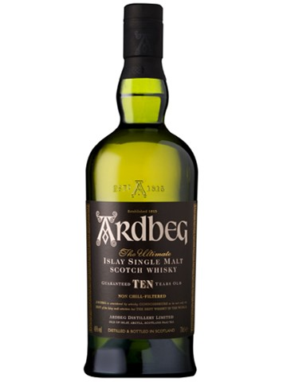

Ardbeg 10 Years Old
강한 피트 향과 레몬, 라임, 바닐라의 맛이 조화를 이루는 Ardbeg의 대표적인 제품입니다.
Ardbeg Uigeadail

셰리 오크통에서 숙성된 달콤한 건포도와 흑설탕, 훈제 향이 어우러진 복합적인 맛을 자랑합니다.
Ardbeg Corryvreckan

강력한 피트와 스파이시한 향이 특징이며, 바다 소금과 초콜릿, 체리의 맛이 느껴집니다.
강한 피트 향과 레몬, 라임, 바닐라의 맛이 조화를 이루는 Ardbeg의 대표적인 제품입니다.
셰리 오크통에서 숙성된 달콤한 건포도와 흑설탕, 훈제 향이 어우러진 복합적인 맛을 자랑합니다.
강력한 피트와 스파이시한 향이 특징이며, 바다 소금과 초콜릿, 체리의 맛이 느껴집니다.